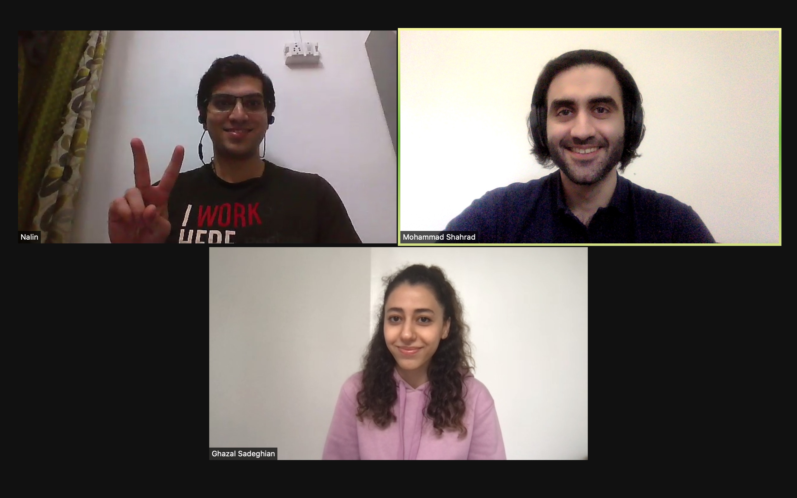

Welcoming Ghazal and Nalin!

Today we had our first CIRRUS group meeting with Ghazal Sadeghian and Nalin Munshi on board. Ghazal and Nalin are both MASc students in the ECE department. They kindly provided short bios of themselves for introduction:
"I am a Graduate Student in the Department of Electrical and Computer Engineering at The University of British Columbia (UBC). I received my Bachelor's degree from Vellore Institute of Technology, India, in 2019. Before joining UBC, I worked with the Webex Contact Center in Cisco, India as a Software Engineer. Having niche cloud computing experience under my belt has motivated me to pursue formal education and research in the same field. I am here to bring a unique "Engineer's perspective" to Dr. Shahrad's research efforts and, in the process, explore untrodden areas in Serverless computing. On a lighter note, I enjoy outdoor sports and puns - I'm CIRRUS about it!"
Nalin Munshi
"I am a Master's student in Electrical and Computer Engineering at UBC. I completed my BSc in Computer Engineering at the Amirkabir University of Technology in Iran. I am interested in Cloud Computing as it is applicable in nearly all areas, and it has a broad range of customers, from individual users to giant companies. I aim to improve current cloud computing systems' performance and address existing constraints."
Ghazal Sadeghian
Wishing Ghazal and Nalin a thriving journey at UBC!
Sep. 3, 2021